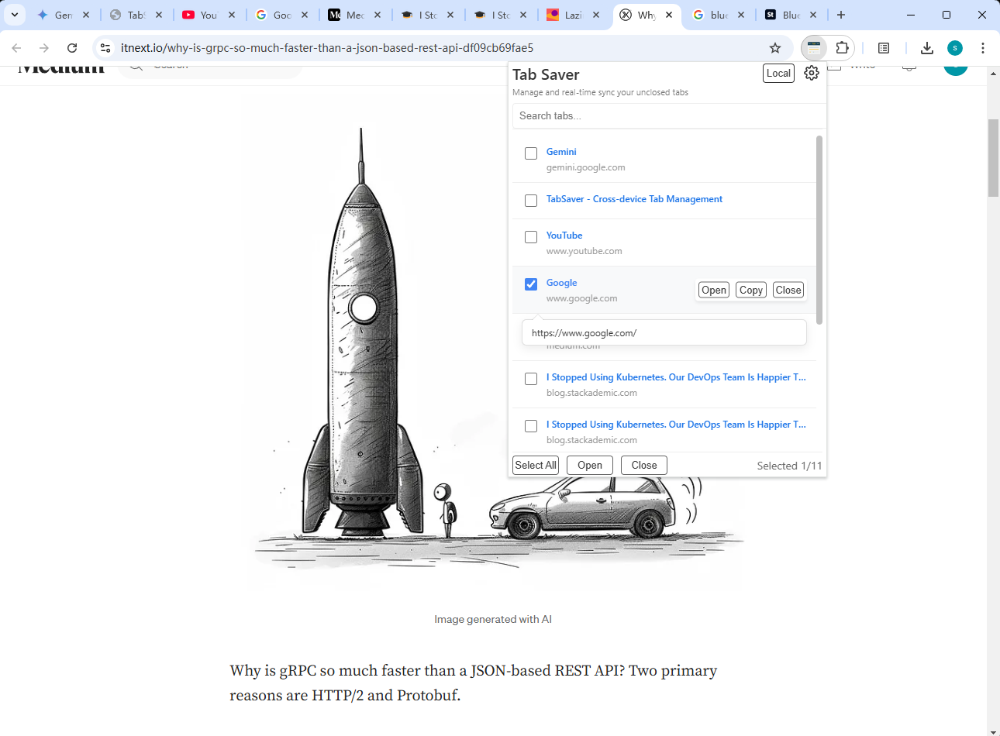
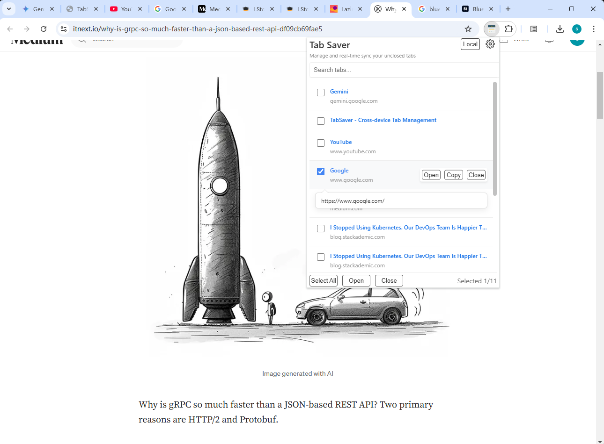

跨设备无缝标签页管理
TabSaver 帮助您轻松管理同步和组织所有设备上的浏览器标签页。
 



核心功能
跨设备同步
实时无缝同步所有设备上的标签页。
智能搜索
通过强大的搜索功能快速找到任何标签页。
批量操作
通过批量操作高效管理多个标签页。
主题支持
可选择浅色、深色或跟随系统主题以匹配您的偏好。
体验 TabSaver
常见问题
什么是 TabSaver？
TabSaver 是一个强大的 Chrome 扩展，旨在革命化您的标签页管理体验。它允许您：
- 实时无缝同步所有设备上的标签页
- 保存和组织您的浏览器标签页
- 从任何设备访问您的标签页
- 快速搜索您的保存的标签页
- 使用直观的界面管理标签页
无论您是学生、专业人士还是普通用户，TabSaver 都可以帮助您保持组织和高效，通过让重要的标签页只需点击即可访问。
TabSaver 是否免费？
是的，TabSaver 完全免费使用。我们相信让高效的标签页管理对每个人都可用。
我的数据有多安全？
您的数据使用 Chrome 内置的同步系统安全同步。我们不会在服务器上存储任何个人数据，确保您的隐私和安全。
哪些浏览器支持？
目前，TabSaver 仅适用于 Google Chrome。我们正在努力让 TabSaver 支持其他浏览器。
如何开始使用？
只需从 Chrome 网上应用店安装 TabSaver 即可开始使用！当您登录 Chrome 时，扩展将自动同步您的标签页。
如果我卸载 TabSaver，我的保存的标签页会发生什么？
您的保存的标签页存储在 Chrome 的同步存储中。如果您卸载并稍后重新安装 TabSaver，您的数据将仍然可用，前提是您使用相同的 Google 帐户。
我可以自定义外观吗？
是的！TabSaver 支持浅色和深色主题，并且可以自动匹配您的系统偏好。您可以在扩展的选项页面中更改主题。